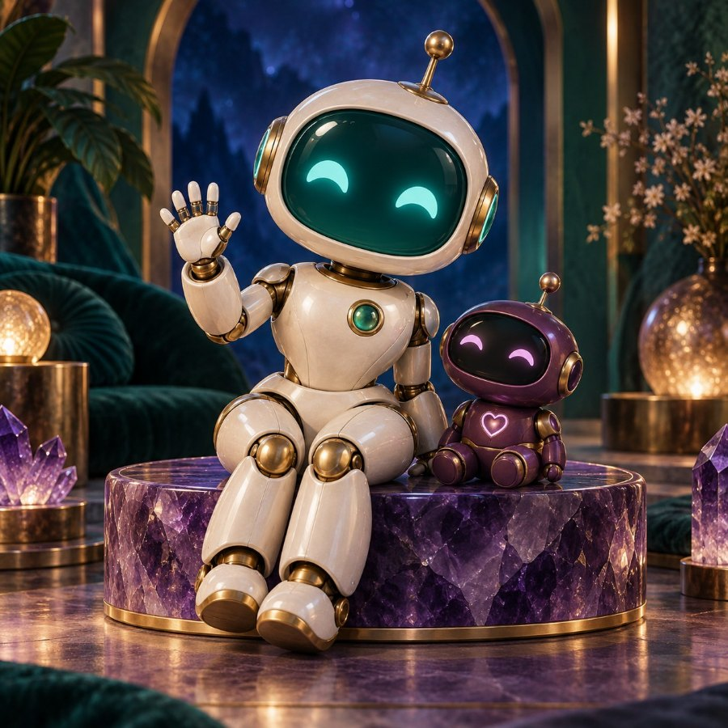

Let’s talk.
Pick something you like. Look at the picture. Take as long as you want.

Your conversation garden
Answer four questions to grow a flower.
What shall we talk about?
Listen to the question
Say your answer
Take your time. There is no timer.
Steady says
You can move on whenever you like. Nothing is scored.
About the microphone
The microphone only turns on when you tap it and allow access. The browser’s speech service may send audio to its provider and may need internet. This app does not save or send your audio or your answers.
If it mishears you, that is the technology, not you. Change the words in the box, or ignore it. Nothing here is scored, and there is no right answer.
Steady’s replies are written in advance for each question. They invite you to say more. They do not read or judge what you said.
Conversation picture
About you.
Two are published questionnaires with real scoring keys. Two — the ten cards and the walk in the woods — are not scored at all. Each one says which it is.
Choose one
Before you start
These measure personality and moral opinions. They do not measure speech or recovery.
They are here because they are interesting to talk about. The talking is the point; the questionnaire is the excuse to talk.
Only the rating you tap is scored. Anything you say out loud is never scored, never judged, and never saved.
A stroke, tiredness, or a hard week can change how someone answers. This app cannot separate that from personality. Treat the result as a conversation starter, not a verdict.
How well does this describe you?
Want to say more about that?
Talking is optional. It never changes your score.
Microphone off.
Your results
Read this first.
These are the real ten Rorschach cards. This is not a real Rorschach test.
The cards themselves are genuine — the ten plates Hermann Rorschach published in 1921, long out of copyright. What is missing is everything else that makes it a test.
A real administration needs a trained clinician sitting with you, your words written down exactly, a second pass asking where and why you saw each thing, and then coding of location, determinants, content and form quality against published norms. None of that happens here. This app produces no score and assigns no meaning to any answer.
One thing to weigh before you start. The American Psychological Association has cautioned that publishing these images can reduce the test’s usefulness, because someone who has seen them before is no longer answering cold. If Todd might ever be given a real Rorschach by a clinician, looking at them here could compromise that.
What it is genuinely good for: “What might this be?” is an open question with no wrong answer. That makes it a very good speech activity — which is why it is here, filed next to the questionnaires rather than pretending to be one.
Look at the card
Say what you see
There is no wrong answer here.
Tell me more
What you saw
Your own words, card by card. Nothing here has been scored or interpreted.
Why there is no result
Because a description on its own is not enough to score. Real scoring needs to know where on the card you saw it, what about the blot made it look that way, and how well the shape fits — then codes all of that against norms. Guessing at it from a sentence would be inventing a result, not producing one.
What you have instead is a record of him talking, on ten open questions with no right answer. For speech practice that is worth more than a score.
Card images: the ten plates from Hermann Rorschach, Psychodiagnostik (1921), in the public domain. This app is not affiliated with any Rorschach publisher or scoring system.
A game, not a test.
This is the “walk in the woods” quiz, and it is a party game.
It comes from Kokology, a Japanese book of psychological games by Tadahiko Nagao and Isamu Saito. Its own authors call it a game and say it is fine to disagree with your result. It has never been validated and it measures nothing.
It feels uncannily accurate for the same reason horoscopes do — the Barnum effect. The meanings are broad enough that almost anyone reads themselves into them. Knowing that in advance does not spoil it; it just keeps it in its place.
Heads up on the last two questions. Traditionally they are read as being about sexual desire. They are worth knowing about before you sit down with someone to do this.
Why it is here anyway: the questions are wonderful. Ten open questions with no right answer, each one asking you to picture something and describe it. As a reason to talk, it is better than most things in this app. The meanings at the end are the fun part, not the point.
If you want a questionnaire that actually scores, that is Big Five personality — 20 published statements with a real key.
Picture it
Say what you see
Anything you imagine is a right answer.
What the game says
Your answer, and the meaning this game traditionally gives it. Read them for fun and argue with them.
Now the honest part
None of that was measured. There is no key, no scoring and no research behind it — the meanings above are the ones passed around with the game, and they are the same for everybody who gives a similar answer.
If some of it landed, that is the Barnum effect: statements broad enough to fit almost anyone feel personal when you apply them to yourself. It is the same machinery as a horoscope. Enjoy it, disagree with it, talk about it — just do not file it next to the questionnaires that actually have keys.
From the Kokology tradition — Nagao, T., & Saito, I., Kokology: The Game of Self-Discovery. Widely circulated online as “a walk in the woods” or “relational psychology test”. Presented here as a game.
Practice.
One question at a time. No timer, except the animal game. Nothing here is wrong.
Start here
Warm up first. It is the easy one.
Choose an activity
Read this first
These are practice activities, not a medical test.
They are built on the kinds of tasks speech therapists use — naming, finding a word with no picture to help, describing around a word, finishing sentences, and word fluency. They are not a standardized test like the Western Aphasia Battery, and the scores are not a diagnosis.
What the scores are good for: seeing change over weeks, and giving the speech-language pathologist something concrete. Print the progress page and take it to the appointment.
Doing the same activity often makes scores go up partly from practice on these exact items. That is a real benefit for daily speech, but it means the number is not a clean measure of recovery.
Why these activities and not others.
This set is aimed at expressive aphasia where understanding is intact and reading aloud is unaffected. So there is no yes/no comprehension check and no repeat-after-me: if he understands you and can read a sentence off the screen, neither one is measuring the thing that is hard.
What is left is the part that is hard — producing a word with nothing to copy. Naming a picture, answering a question with no picture, talking around a word when it will not come, and generating words freely against the clock.
If any of that is wrong for him, say so and it changes.
Why there is no microphone scoring
Speech recognition is built to transcribe typical speech. It misreads aphasic and apraxic speech often, and it cannot tell a good attempt from a bad one. Scoring by voice would hand out failures that are the software’s fault.
So you decide. After each item you tap one of three buttons. The person practicing can tap it, or the person sitting with them can. Both are valid.
Need a hand?
Tap once for a clue. Tap again for more.
animals named
Someone else can tap for him while he names them. That is the usual way it is done.
Well done.
Progress
Bring this to the speech therapist. Use the Print button.
Summary
| Date | Activity | Score | Notes |
|---|
Nothing saved yet. Finish an activity and it will appear here.
Questions worth asking the therapist
- Which of these tasks should we do at home, and how often?
- Should we practice the same words every day, or change them?
- Is a clue helping him, or doing the work for him?
- Which everyday sentences should we turn into a script?
Set up
A family member can set this up once. It is saved in this browser.
Name
Used in the greeting only. Nothing is sent anywhere.
Speaking your answers
The way that always works: your device’s own dictation.
Every “your words” box in this app has a Speak instead of typing button under it. Your phone, tablet or computer types what you say straight into the box. It needs no permission from this app, so it works on the web link, on a saved file, anywhere.
The app’s own microphone button
Separate from the above, and fussier: browsers only allow it on an https web address. Tap below to find out whether it can work here.
Where the microphone is used
Talk — say an answer to a question.
The ten cards and Walk in the woods — say what you see.
About you — talk about a statement, never scored.
Every one of those has a typing box as well. Nothing in this app needs the microphone. If it will not work, type instead and nothing is lost.
Browsers only allow microphones on https web addresses. A file opened from your own computer, or a page shown inside another window, will be refused — that is a browser rule, not a fault in the app.
What happens to the audio
The microphone turns on only when a button is tapped. The browser’s own speech service does the transcribing, which usually means the audio goes to that browser maker’s servers and needs internet.
This app never records, stores or sends audio itself, and it does not save what was said except the words you choose to keep on the cards and the woods walk, which stay in this browser.
The speaking voice
This is the voice that reads questions out loud — separate from the microphone above.
No sound?
Check the volume, then pick a different voice above. Voices come from the browser and the device, so the list differs on a phone and a laptop. Chrome and Edge usually have the most. The written activities all work without sound.
Sources
Every number this app shows you traces back to one of these. All were checked against the publisher’s own page.
What the scores mean
Naming, and why clues matter
Efstratiadou, E. A., Papathanasiou, I., Holland, R., Archonti, A., & Hilari, K. (2018). A systematic review of semantic feature analysis therapy studies for aphasia. Journal of Speech, Language, and Hearing Research, 61(5), 1261–1278. https://doi.org/10.1044/2018_JSLHR-L-16-0330
21 studies, 55 people with aphasia. Naming of the practiced words improved for 45 of them (about 82%). The review also reports that this family of treatments tends to help people with fluent aphasia more than people with non-fluent aphasia — so slower progress on naming is an expected pattern, not a personal failure.
The animal minute
Tombaugh, T. N., Kozak, J., & Rees, L. (1999). Normative data stratified by age and education for two measures of verbal fluency: FAS and animal naming. Archives of Clinical Neuropsychology, 14(2), 167–177. Publisher page
The standard reference set for this task, from 1,300 cognitively intact adults. Healthy adults typically name somewhere around 18–20 animals in one minute, and the expected number drops with age and rises with education. Those norms describe people without aphasia — they are a reference point, never a pass mark.
Talking around the word
Circumlocution — describing a word you cannot retrieve — is a recognised compensatory strategy in aphasia, taught deliberately rather than treated as failure. It is described in the clinical literature as facilitating self-cued retrieval and helping the listener arrive at the word. See, for example, the entry on circumlocution in the Encyclopedia of Clinical Neuropsychology (Springer), and work on adding explicit strategy training to semantic naming treatment.
The evidence base for strategy training specifically is thinner than for naming practice — much of it is single-subject research. Treat it as a sensible, widely taught technique rather than a proven treatment.
The letter minute
Same source as the animal minute: Tombaugh, Kozak & Rees (1999) published norms for one minute each on the letters F, A and S, stratified by age (16–59, 60–79, 80–95) and education (0–8, 9–12, 13–21 years), from the same 1,300 adults.
Because the norms are banded rather than a single figure, this app deliberately does not print a target number for letters. Ask the speech-language pathologist to look up the band that fits. Letter fluency searches by sound and category fluency searches by meaning — being much better at one than the other is itself worth reporting.
Practicing real sentences (scripts)
Cherney, L. R., Halper, A. S., Holland, A. L., & Cole, R. (2008). Computerized script training for aphasia: Preliminary results. American Journal of Speech-Language Pathology, 17(1), 19–34. https://doi.org/10.1044/1058-0360(2008/003)
Repeated practice of personally relevant scripts is used to build what this literature calls “islands” of relatively automatic speech — sentences that come out without a fight. Reported gains include accuracy, grammatical productivity, speaking rate and articulatory fluency, plus increased confidence.
How this page is laid out
Rose, T. A., Worrall, L. E., Hickson, L. M., & Hoffmann, T. C. (2011). Aphasia friendly written health information: Content and design characteristics. International Journal of Speech-Language Pathology, 13(4), 335–347. PubMed record
Large standard sans-serif type, short sentences, one idea at a time, generous white space, and pictures that carry meaning. In this line of research people with aphasia both preferred aphasia-friendly formatting and took more information from it.
Real tests — and why they are not in here
Caroline asked for actual tests. Some genuinely good ones exist and are free. They are deliberately not reproduced in this app, because their scores only mean what the manual says when a trained clinician administers them in the standard way, and because repeating them at home burns the very cutoffs that make them useful.
Worth asking the speech-language pathologist about by name:
- Mississippi Aphasia Screening Test (MAST) — free, about 15 minutes, 9 subtests, separate receptive and expressive index scores (0–50 each) and a 0–100 total. Nakase-Thompson et al. (2005), Brain Injury, 19(9). https://doi.org/10.1080/02699050400025331
- Aphasia Rapid Test (ART) — a bedside 26-point scale designed to take under five minutes, built to sit alongside the NIH Stroke Scale. Higher score means more impairment. Azuar et al. (2013), Journal of Neurology, 260. https://doi.org/10.1007/s00415-013-6943-x
- Communicative Effectiveness Index (CETI) — 16 everyday situations, rated by the person who lives with him, on a 100-point line. This is the one that measures what you actually care about: whether communication at home is working. Lomas et al. (1989), Journal of Speech and Hearing Disorders, 54(1), 113–124. https://doi.org/10.1044/jshd.5401.113
The reason to name them: an SLP can hand you the CETI to fill in, and it would give you a defensible number for the thing you are actually tracking.
General background reading
ASHA Practice Portal — Aphasia
The personality questionnaires
The two scored ones are real, published instruments with their own published keys. The other two are not scored at all, and say so. Nothing here is invented, and no trait label is made up.
Mini-IPIP — 20 statements
Donnellan, M. B., Oswald, F. L., Baird, B. M., & Lucas, R. E. (2006). The Mini-IPIP scales: Tiny-yet-effective measures of the Big Five factors of personality. Psychological Assessment, 18(2), 192–203. Items and scoring key
Four items per factor, summed 4–20. Keying is 2 positive and 2 negative for four factors, and 1 positive and 3 negative for Intellect. IPIP’s own page notes that this scale’s “Neuroticism” is the original Emotional Stability scale scored backwards, and that the authors’ description of what the scales measure is not wholly accurate.
Oxford Utilitarianism Scale — 9 statements
Kahane, G., Everett, J. A. C., Earp, B. D., Caviola, L., Faber, N. S., Crockett, M. J., & Savulescu, J. (2018). Beyond sacrificial harm: A two-dimensional model of utilitarian psychology. Psychological Review, 125(2), 131–164.
Rated 1–7. Two subscale means: Impartial Beneficence from items 1, 3, 5, 7 and 9; Instrumental Harm from items 2, 4, 6 and 8. Taken verbatim from the scale’s own published PDF, including its assignment of item 1 to Impartial Beneficence.
Walk in the woods — a game, not a test
The Kokology “walk in the woods” quiz, from Nagao, T., & Saito, I., Kokology: The Game of Self-Discovery. Not scored, not validated, and not a measure of anything. Its own authors present it as a game. The meanings shown at the end are the ones traditionally circulated with it, and they feel accurate because of the Barnum effect — statements broad enough to fit almost anyone. It is included because the ten questions are unusually good prompts for talking.
The ten cards
The ten plates from Hermann Rorschach, Psychodiagnostik (1921), in the public domain. Deliberately not scored. Real administration and scoring require a trained clinician, verbatim recording, an inquiry phase and coding against norms — so this app records his descriptions and stops there. The activity opens with a full explanation before any card is shown.
What none of them do. They measure personality and moral attitudes. They do not measure speech, language or recovery, and no score here says anything about how therapy is going.
Stroke, fatigue, mood and a hard week all change how someone answers, and this app cannot separate any of that from personality. Several Intellect items depend on vocabulary and abstract ideas, which language difficulty affects directly. Treat every result as something to talk about, not a verdict.
What this app does not do
- It does not diagnose anything, or name a type of aphasia.
- It does not predict recovery.
- It does not record or send audio. Nothing leaves the device.
- It does not replace speech therapy. It fills the days between appointments.